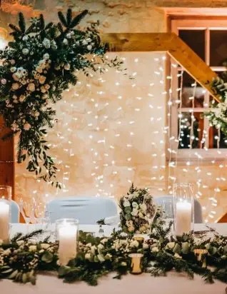
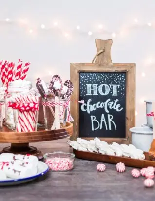
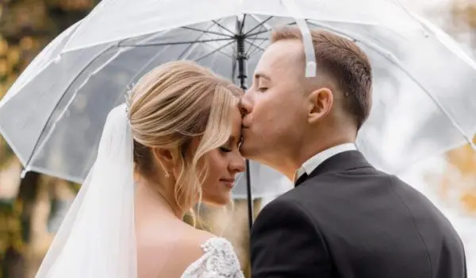

You're used to seeing weddings take place in summer! Why not make yours unique and celebrate it during the winter months in the Gironde?
A winter wedding!
If you'd like a singular wedding full of sharing and emotion in the Bordeaux region, choose a union full of originality and filled with the magic of winter. What could be more romantic than this time of year, so conducive to conviviality and closeness, for celebrating your love!
The advantages of a winter wedding
Celebrating your wedding in winter can be a truly charming option with plenty of advantages. Here are 3 good reasons to consider a winter wedding:

A warm, unique atmosphere
Winter means cocooning, open fires and comforting warmth. A winter wedding offers an intimate, warm atmosphere, perfect for unforgettable, magical memories. You can also draw on the feel of mountain chalets, cosy fabrics, the purity of the winter vines and more to create a unique, comforting atmosphere that will set you apart and amaze your guests!

Available venues and attractive rates
Since winter weddings are rarer and less in demand, you'll have a wider choice of reception venues. Many suppliers also offer attractive rates for off-season weddings, which can save you a great deal!

Culinary experiences
Winter is renowned for its hearty, comforting dishes. Your guests will be delighted to find warm "classics" such as raclette and tartiflette, reinvented especially for the occasion! You can also offer special winter mini-bars with authentic mulled wine or legendary hot chocolate.
My role?
As your wedding planner, my role is to help you make your wedding a high-end, warm event full of love. What an idyllic sight to see the bride walking forward in her beautiful white dress in this winter wonderland.
From decorating the venue to the schedule and entertainment, I will take care of the full coordination of your wedding right up to the big day. Through my services as a wedding planner, I'll make this the most important and most beautiful day of your life!
So for a unique wedding like this one, don't wait any longer: contact me by email or phone and together let's create a winter wedding full of magic and beauty, for a union that lasts for ever.

Unique memories
A winter wedding is an ideal opportunity to create unique, magical memories, combining a warm atmosphere, dreamy decor and attractive rates!
So why not choose a winter wedding and make your big day a memorable winter celebration?
Lovely Day Event offers several services
Wedding planning
I step in at every stage of your preparations and guide you through your choices, bringing ideas and suggestions so that your wedding looks like no one but you.
Wedding design
Creative and passionate, I am a certified Wedding Designer and I create a scenographic atmosphere that matches the theme of your wedding.
On-the-day coordination
I will be the conductor of your day, managing the suppliers, the set-up of your decor and the smooth running of this beautiful day.